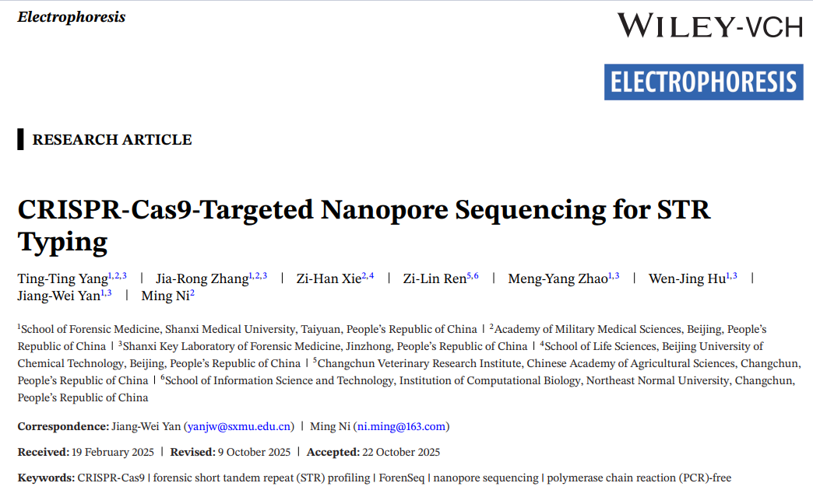
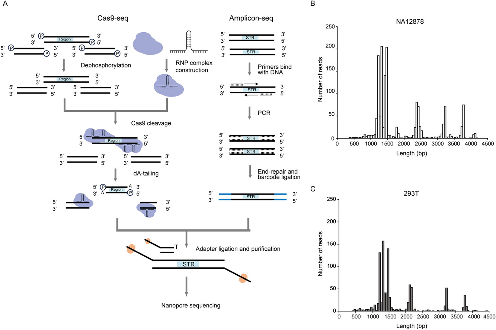
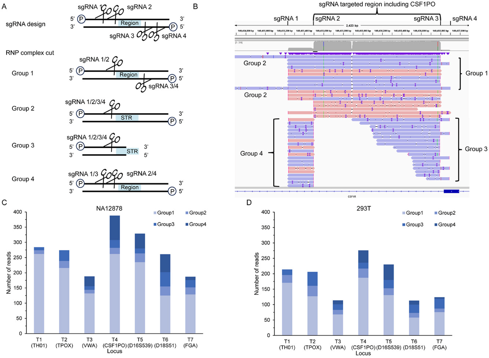
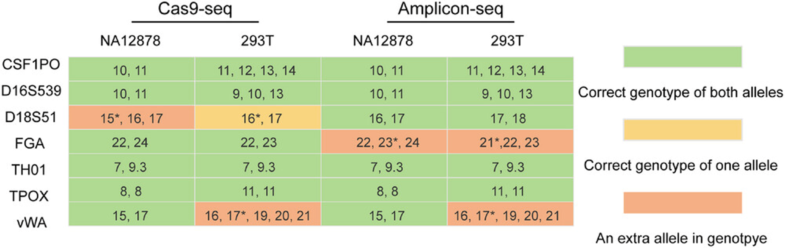

CRISPR-Cas9-Targeted Nanopore Sequencing for STR Typing
Yang et al., Electrophoresis, 2026
2026-03-09

What is STR?
Short Tandem Repeats (STRs) are genetic markers widely used in human identification and forensic investigations;
Selected for high population polymorphism, low mutation rate, and robust amplification;

Limitations of conventional PCR
Generation of stutters (amplification artifacts);
Failure in long fragments (>5 kbp) and regions with high GC content;
Multiple PCR steps introduce bias and errors.
Why avoid PCR for STR enrichment?
- PCR amplification of forensic STRs causes stutter artifacts that affect genotyping accuracy and sensitivity;
- Investigating a PCR-free alternative is therefore scientifically motivated;
- CRISPR-Cas9 + sgRNA as an enrichment tool;
- Fragments are sequenced by MPS or nanopore — no amplification needed;
What is nanopore sequencing?
A single-molecule sequencing technology — reads individual DNA strands directly;
No amplification required at the sequencing step;
Capable of long reads, preserving native DNA modifications (e.g., methylation);
Nanopore + forensic STRs
Several studies have shown nanopore can profile forensic STRs — but still relying on PCR amplification beforehand;
Giesselmann et al. (2019) demonstrated this combination for long pathogenic STRs (>2,599 bp) and CpG methylation detection — without PCR;
But forensic STR profiling demands high precision, and no study had yet applied this approach to forensic loci;
This study fills that gap — first to combine CRISPR-Cas9 enrichment with nanopore sequencing specifically for forensic STR typing.
Objective
Evaluate whether CRISPR-Cas9-guided nanopore sequencing (Cas9-seq), a PCR-free workflow, is feasible for forensic STR typing—and compare it to amplicon sequencing (amplicon-seq) based on the ForenSeq kit.
How Does Cas9-seq Work?
PCR-free workflow:
1. Dephosphorylation of genomic DNA;
2. RNP complex assembly (sgRNA + Cas9 protein);
3. Cas9 cleavage at target sites;
4. dA-tailing of cleaved ends;
5. Sequencing adapter ligation.
How Does Cas9-seq Work?

Schematic diagram comparing the Cas9-seq workflow (left) and the amplicon-seq workflow (right)
Experimental Design
| Parameter | Detail |
|---|---|
| STR loci evaluated | 7 (CSF1PO, D16S539, D18S51, FGA, TH01, TPOX, vWA) |
| sgRNAs designed | 28 (4 per locus) |
| Samples | NA12878 and 293T (cell lines) |
| DNA input (Cas9-seq) | 3 µg |
| DNA input (amplicon-seq) | 1 ng |
| Sequencer | MinION Mk1B — R9.4.1 flow cell |
| Validation | Capillary electrophoresis (CE) with PowerPlex 21 |
Enrichment of Target Regions
- Target regions represent only 0.0005% of the human genome;
- Cas9-seq achieved average enrichment of:
- 643× in sample NA12878;
- 468× in sample 293T;
- Average sequencing depth: 212× (NA12878) and 135× (293T);
- Outperforms previous similar methods (25×, 10.7×, and 7×);
Enrichment of Target Regions

Bar charts showing the number of on-target reads per STR locus for both samples (NA12878 and 293T).
Strand Balance
- Cas9-seq showed far superior forward/reverse strand balance compared to amplicon-seq:
- Cas9-seq: 82.86% ± 13.28%;
- Amplicon-seq: 33.18% ± 8.14%;
- Statistically significant difference (one-way ANOVA, p = 0.000122);
- Lower strand bias may improve genotyping reliability;
Genotyping Accuracy
- Both methods had identical accuracy: 78.57%;
- Each method produced 3 genotyping errors:
| Method | Loci with errors |
|---|---|
| Cas9-seq | D18S51 (NA12878 and 293T) and vWA (293T) |
| Amplicon-seq | FGA (both samples) and vWA (293T) |
- Errors associated with alleles showing relatively high read frequencies (stutter-like pattern);
Genotyping Accuracy

Concordance table of STR genotypes in NA12878 and 293T by Cas9-seq and amplicon-seq, benchmarked against CE results. Asterisks indicate incorrect alleles.
Read Noise
- Cas9-seq showed higher noise at loci containing homopolymers:
- FGA: complex repeat structure with a 6-mer polyA region;
- D18S51: [AGAA]n structure with 3-mer and 5-mer polyA regions;
- Nanopore sequencing is inherently error-prone in homopolymer regions;
- Amplicon-seq produced cleaner reads (fewer indels and substitutions);
Read Noise

Visualization of reads aligned to FGA (A and B) and D18S51 (C and D), comparing noise levels between Cas9-seq and amplicon-seq in the NA12878 sample.
Read Noise

Visualization of reads aligned to FGA (A and B) and D18S51 (C and D), comparing noise levels between Cas9-seq and amplicon-seq in the NA12878 sample
False-Positive SNPs
- Amplicon-seq introduced 3 false-positive SNPs (confirmed by Sanger sequencing):
- chr5:149455858 — C→T;
- chr11:2192265 — C→A;
- chr12:6093102 — T→A/T (heterozygous);
- Cas9-seq introduced no false-positive SNPs;
- Mutations arising during initial PCR amplification are erroneously interpreted as true variants;
Study Limitations
- Only 2 samples tested (cell lines, not real forensic samples);
- Only 7 loci out of 20 CODIS core STRs evaluated;
- High DNA input required (minimum 3 µg) — impractical for many forensic samples (dried blood, degraded saliva);
- Methylation analysis was not performed, despite being one of the method’s key promises;
Conclusion
Where Cas9-seq performed well:
- ✅ High target enrichment (>500× on average);
- ✅ Excellent forward/reverse strand balance;
- ✅ No false-positive SNPs introduced;
Where Cas9-seq fell short:
- ❌ Genotyping accuracy identical to amplicon-seq (78.57%);
- ❌ Higher read noise in homopolymer-containing regions;
- ❌ Requires a large DNA input amount;
Conclusion
The PCR-free Cas9-seq approach is not currently recommended for forensic STR genotyping. Promising future directions include methylation detection, microhaplotype analysis, and larger genomic markers.
marcel.ferreira@unesp.br